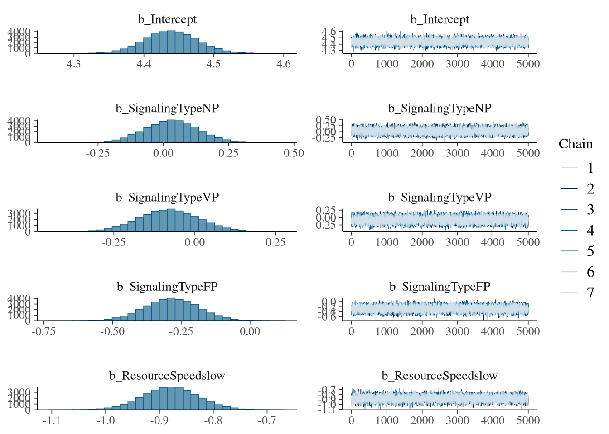
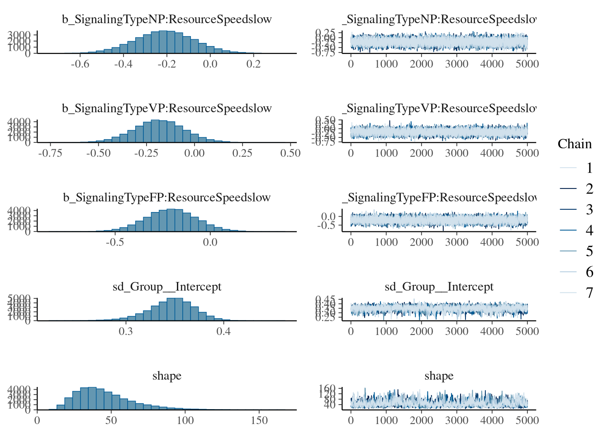
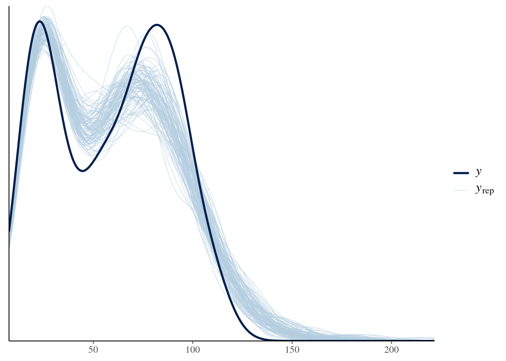
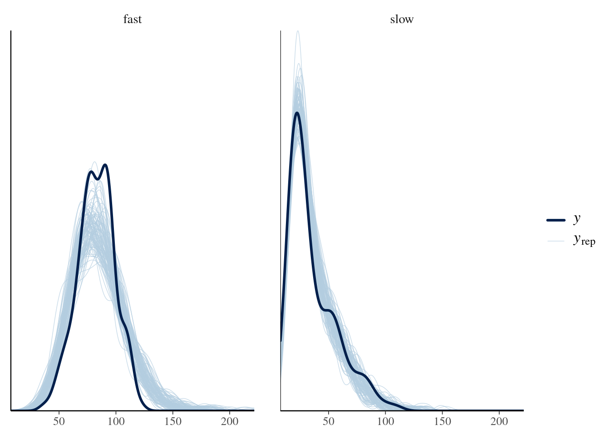
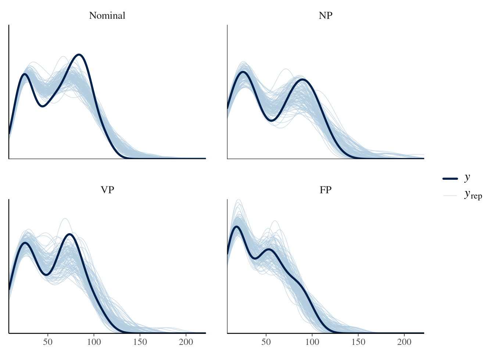
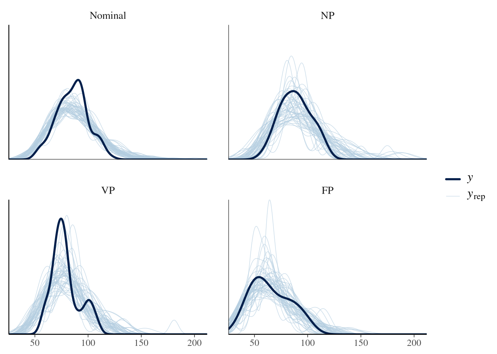
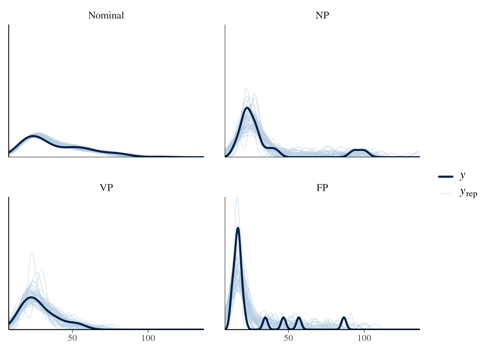
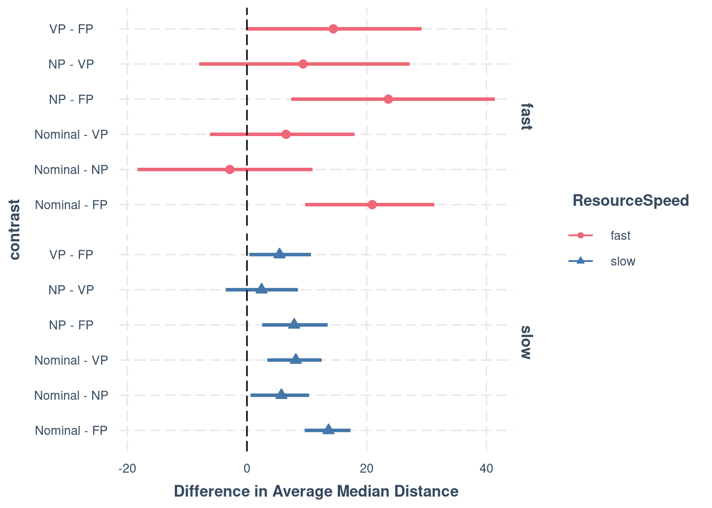

Average Median Distance to Resource
This analysis computes the average median distance to the resource center across the experiment. For each group (or nominal group), at each time step we take the median distance across all members, then average that median across all time steps. We compare this group-level metric between interacting groups (FP, NP, VP) and synthetic “nominal groups” constructed by randomly combining the time-series data of five solitary participants.
Data Preparation
Step 3: Compute group-level median distance time series for interacting groups
For interacting groups (FP, NP, VP conditions with valid groups), at each time step we take the median distance across all group members, then average across all time steps.
Step 4: Construct nominal groups from solo participants
We construct synthetic “nominal groups” by randomly combining 5 solitary participants (from the A condition) who played in the same resource speed. For each nominal group, at each time step we take the median across the 5 solo participants’ distances, then average across time.
Descriptive Statistics
| SignalingType | ResourceSpeed | Mean | SD | Median | Min | Max |
|---|---|---|---|---|---|---|
| Nominal | fast | 86.37 | 13.98 | 86.98 | 38.24 | 123.01 |
| Nominal | slow | 38.87 | 20.25 | 32.58 | 12.95 | 109.51 |
| FP | fast | 65.12 | 18.33 | 62.43 | 37.23 | 98.64 |
| FP | slow | 25.18 | 19.55 | 17.01 | 12.84 | 86.60 |
| VP | fast | 78.69 | 13.01 | 76.19 | 59.49 | 106.83 |
| VP | slow | 28.40 | 11.49 | 26.53 | 14.30 | 54.74 |
| NP | fast | 88.46 | 14.24 | 88.54 | 63.58 | 112.29 |
| NP | slow | 33.65 | 24.61 | 24.40 | 15.28 | 100.02 |
Descriptive Plots
Statistical Model
We model the average median distance using a Gamma family with a log link.
The dependent variable is a strictly positive, continuous physical distance
with a right skew, making the Gamma distribution an appropriate choice.
We use SignalingType (Nominal vs FP vs VP vs NP) and ResourceSpeed as
predictors with their interaction.
Data for modelling
Real group counts: # A tibble: 2 × 2 ResourceSpeed nm.AvgMedDist.model_data %>%
ggplot(aes(x = AvgMedDist)) +
geom_histogram(binwidth = 5, fill = "lightblue", color = "black") +
facet_grid(rows = vars(ResourceSpeed), cols = vars(SignalingType)) +
theme_nice()
Model specification
m.AvgMedDist.1.formula <- brmsformula(
AvgMedDist ~ 1 + SignalingType * ResourceSpeed + (1 | Group),
family = Gamma(link = "log")
)
m.AvgMedDist.1.formula_comparison <- brmsformula(
AvgMedDist ~ 1 + SignalingType * ResourceSpeed
)
m.AvgMedDist.1.priors <-
prior(normal(0, 0.5), class = b) +
prior(normal(4, 1), class = Intercept) + # log(~55) ≈ 4; regularises intercept on log scale
prior(gamma(4, 0.1), class = shape) +
prior(exponential(1), class = sd, lb = 0)Prior predictive checks
m.AvgMedDist.1.fit_prior <- brm(
formula = m.AvgMedDist.1.formula,
data = m.AvgMedDist.model_data,
prior = m.AvgMedDist.1.priors,
chains = 4,
cores = 4,
seed = 42,
iter = 2000,
file = paste0(fits_path, "avg_med_dist_1_prior.rds"),
sample_prior = "only",
backend = "cmdstanr",
threads = threading(100),
control = list(adapt_delta = 0.99),
save_pars = save_pars(all = TRUE)
)
m.AvgMedDist.1.y <- m.AvgMedDist.model_data$AvgMedDist## Family: gamma
## Links: mu = log; shape = identity
## Formula: AvgMedDist ~ 1 + SignalingType * ResourceSpeed + (1 | Group)
## Data: m.AvgMedDist.model_data (Number of observations: 311)
## Draws: 4 chains, each with iter = 2000; warmup = 1000; thin = 1;
## total post-warmup draws = 4000
##
## Multilevel Hyperparameters:
## ~Group (Number of levels: 311)
## Estimate Est.Error l-95% CI u-95% CI Rhat Bulk_ESS Tail_ESS
## sd(Intercept) 1.02 1.01 0.03 3.76 1.00 4115 2157
##
## Regression Coefficients:
## Estimate Est.Error l-95% CI u-95% CI Rhat Bulk_ESS Tail_ESS
## Intercept 3.99 1.02 1.98 5.99 1.00 5229 3185
## SignalingTypeNP 0.00 0.50 -0.96 0.97 1.00 5021 3195
## SignalingTypeVP 0.00 0.49 -0.96 0.94 1.00 5257 3256
## SignalingTypeFP -0.00 0.49 -1.00 0.98 1.00 4869 2933
## ResourceSpeedslow -0.01 0.49 -0.97 0.96 1.00 5433 2629
## SignalingTypeNP:ResourceSpeedslow -0.00 0.51 -1.01 0.98 1.00 4727 3112
## SignalingTypeVP:ResourceSpeedslow 0.00 0.50 -0.97 0.98 1.00 5266 3017
## SignalingTypeFP:ResourceSpeedslow 0.02 0.51 -0.96 1.03 1.00 4915 2912
##
## Further Distributional Parameters:
## Estimate Est.Error l-95% CI u-95% CI Rhat Bulk_ESS Tail_ESS
## shape 39.99 20.13 11.02 89.85 1.00 4733 2562
##
## Draws were sampled using sample(hmc). For each parameter, Bulk_ESS
## and Tail_ESS are effective sample size measures, and Rhat is the potential
## scale reduction factor on split chains (at convergence, Rhat = 1).Model fitting
m.AvgMedDist.1.fit <- brm(
formula = m.AvgMedDist.1.formula,
data = m.AvgMedDist.model_data,
prior = m.AvgMedDist.1.priors,
chains = 7,
cores = 7,
seed = 42,
iter = 10000,
file = paste0(fits_path, "avg_med_dist_1.rds"),
backend = "cmdstanr",
threads = threading(100),
control = list(adapt_delta = 0.99),
save_pars = save_pars(all = TRUE)
)## Family: gamma
## Links: mu = log; shape = identity
## Formula: AvgMedDist ~ 1 + SignalingType * ResourceSpeed + (1 | Group)
## Data: m.AvgMedDist.model_data (Number of observations: 311)
## Draws: 7 chains, each with iter = 10000; warmup = 5000; thin = 1;
## total post-warmup draws = 35000
##
## Multilevel Hyperparameters:
## ~Group (Number of levels: 311)
## Estimate Est.Error l-95% CI u-95% CI Rhat Bulk_ESS Tail_ESS
## sd(Intercept) 0.35 0.02 0.29 0.39 1.00 1341 2721
##
## Regression Coefficients:
## Estimate Est.Error l-95% CI u-95% CI Rhat Bulk_ESS Tail_ESS
## Intercept 4.44 0.04 4.37 4.51 1.00 7090 13186
## SignalingTypeNP 0.03 0.10 -0.17 0.23 1.00 7850 14555
## SignalingTypeVP -0.08 0.09 -0.26 0.10 1.00 7314 14015
## SignalingTypeFP -0.28 0.10 -0.48 -0.10 1.00 7579 12023
## ResourceSpeedslow -0.88 0.05 -0.98 -0.78 1.00 7422 13246
## SignalingTypeNP:ResourceSpeedslow -0.21 0.14 -0.48 0.06 1.00 8001 13513
## SignalingTypeVP:ResourceSpeedslow -0.18 0.13 -0.44 0.07 1.00 7636 14063
## SignalingTypeFP:ResourceSpeedslow -0.21 0.13 -0.47 0.06 1.00 8486 14638
##
## Further Distributional Parameters:
## Estimate Est.Error l-95% CI u-95% CI Rhat Bulk_ESS Tail_ESS
## shape 45.47 19.39 18.05 93.12 1.01 792 2017
##
## Draws were sampled using sample(hmc). For each parameter, Bulk_ESS
## and Tail_ESS are effective sample size measures, and Rhat is the potential
## scale reduction factor on split chains (at convergence, Rhat = 1).Model diagnostics



ppc_dens_overlay_grouped(m.AvgMedDist.1.y, m.AvgMedDist.1.yrep[1:100, ],
group = m.AvgMedDist.model_data$ResourceSpeed
)
ppc_dens_overlay_grouped(m.AvgMedDist.1.y, m.AvgMedDist.1.yrep[1:100, ],
group = m.AvgMedDist.model_data$SignalingType
)
group <- m.AvgMedDist.model_data$SignalingType
mask <- m.AvgMedDist.model_data$ResourceSpeed == "fast"
ppc_dens_overlay_grouped(m.AvgMedDist.1.y[mask],
m.AvgMedDist.1.yrep[1:50, mask],
group = group[mask]
)
group <- m.AvgMedDist.model_data$SignalingType
mask <- m.AvgMedDist.model_data$ResourceSpeed == "slow"
ppc_dens_overlay_grouped(m.AvgMedDist.1.y[mask],
m.AvgMedDist.1.yrep[1:50, mask],
group = group[mask]
)
Condition comparisons
m.AvgMedDist.1.emmeans_contrast_draws.1 <- m.AvgMedDist.1.fit %>%
emmeans(~ SignalingType * ResourceSpeed,
epred = TRUE,
type = "response",
re_formula = m.AvgMedDist.1.formula_comparison
) %>%
contrast(method = "pairwise", simple = "each", combine = TRUE) %>%
gather_emmeans_draws()m.AvgMedDist.1.comparison.1 <- m.AvgMedDist.1.emmeans_contrast_draws.1 %>%
ggdist::mean_hdci(.width = 0.9) %>%
mutate(.value = round(.value, 2), .lower = round(.lower, 2), .upper = round(.upper, 2))
m.AvgMedDist.1.comparison.1 %>%
knitr::kable("html", digits = 2) %>%
kable_classic(full_width = TRUE, position = "center")| ResourceSpeed | SignalingType | contrast | .value | .lower | .upper | .width | .point | .interval |
|---|---|---|---|---|---|---|---|---|
| . | FP | fast - slow | 42.35 | 32.35 | 52.22 | 0.9 | mean | hdci |
| . | Nominal | fast - slow | 49.53 | 44.05 | 55.03 | 0.9 | mean | hdci |
| . | NP | fast - slow | 58.30 | 43.69 | 72.19 | 0.9 | mean | hdci |
| . | VP | fast - slow | 51.32 | 39.28 | 62.57 | 0.9 | mean | hdci |
| fast | . | Nominal - FP | 20.77 | 9.91 | 31.46 | 0.9 | mean | hdci |
| fast | . | Nominal - NP | -3.12 | -16.94 | 12.08 | 0.9 | mean | hdci |
| fast | . | Nominal - VP | 6.31 | -5.91 | 18.21 | 0.9 | mean | hdci |
| fast | . | NP - FP | 23.89 | 6.55 | 40.48 | 0.9 | mean | hdci |
| fast | . | NP - VP | 9.43 | -8.14 | 27.00 | 0.9 | mean | hdci |
| fast | . | VP - FP | 14.46 | 0.03 | 29.33 | 0.9 | mean | hdci |
| slow | . | Nominal - FP | 13.58 | 9.69 | 17.35 | 0.9 | mean | hdci |
| slow | . | Nominal - NP | 5.65 | 0.96 | 10.70 | 0.9 | mean | hdci |
| slow | . | Nominal - VP | 8.09 | 3.66 | 12.74 | 0.9 | mean | hdci |
| slow | . | NP - FP | 7.93 | 2.40 | 13.34 | 0.9 | mean | hdci |
| slow | . | NP - VP | 2.44 | -3.73 | 8.32 | 0.9 | mean | hdci |
| slow | . | VP - FP | 5.49 | 0.34 | 10.66 | 0.9 | mean | hdci |
m.AvgMedDist.1.emmeans_contrast_draws.1 %>%
filter(ResourceSpeed != ".") %>%
rename(prediction = .value) %>%
ggplot(
aes(
y = contrast,
x = prediction,
color = ResourceSpeed, shape = ResourceSpeed, fill = ResourceSpeed
)
) +
facet_grid(rows = vars(ResourceSpeed)) +
stat_pointinterval(.width = 0.9) +
scale_color_manual(values = get_colors("Qual2", num.colors = 2, reverse = TRUE, gradient = FALSE)) +
scale_fill_manual(values = get_colors("Qual2", num.colors = 2, reverse = TRUE, gradient = FALSE)) +
scale_shape_manual(values = c(21, 24)) +
geom_vline(aes(xintercept = 0), linetype = "longdash") +
labs(x = "Difference in Average Median Distance") +
theme_nice()
m.AvgMedDist.1.emmeans_contrast_draws.2 <- m.AvgMedDist.1.fit %>%
emmeans(~ResourceSpeed,
epred = TRUE,
type = "response",
re_formula = m.AvgMedDist.1.formula_comparison
) %>%
contrast(method = "pairwise", simple = "each", combine = TRUE) %>%
gather_emmeans_draws()m.AvgMedDist.1.comparison.2 <- m.AvgMedDist.1.emmeans_contrast_draws.2 %>%
ggdist::mean_hdci(.width = 0.9) %>%
mutate(.value = round(.value, 2), .lower = round(.lower, 2), .upper = round(.upper, 2))
m.AvgMedDist.1.comparison.2 %>%
knitr::kable("html", digits = 2) %>%
kable_classic(full_width = TRUE, position = "center")| contrast | .value | .lower | .upper | .width | .point | .interval |
|---|---|---|---|---|---|---|
| fast - slow | 50.38 | 44.93 | 55.87 | 0.9 | mean | hdci |
Combined comparison table
m.AvgMedDist.1.comparison.combined_table <- bind_rows(
m.AvgMedDist.1.comparison.2,
m.AvgMedDist.1.comparison.1
) %>%
select(ResourceSpeed, SignalingType, contrast, .value, .lower, .upper) %>%
mutate(
ResourceSpeed = ifelse(is.na(ResourceSpeed), ".", as.character(ResourceSpeed)),
SignalingType = ifelse(is.na(SignalingType), ".", as.character(SignalingType)),
sig = (.lower * .upper) > 0,
Estimate = sprintf("%.2f", .value),
Estimate = ifelse(sig, paste0("\\textbf{", Estimate, "}"), Estimate),
hpdi = sprintf("[%.2f, %.2f]", .lower, .upper),
hpdi = ifelse(sig, paste0("\\textbf{", hpdi, "}"), hpdi)
) %>%
select(ResourceSpeed, SignalingType, contrast, Estimate, hpdi)
colnames(m.AvgMedDist.1.comparison.combined_table) <- c(
"Resource Speed", "Payoff Condition", "Contrast", "Mean", "90\\% HPDI"
)
kbl <- kable(
m.AvgMedDist.1.comparison.combined_table,
format = "latex",
booktabs = TRUE,
align = c("l", "l", "l", "r", "r"),
caption = "Posterior Estimates Average Median Distance",
escape = FALSE
) %>%
kable_styling(latex_options = "hold_position") %>%
row_spec(0, bold = TRUE)
unique_speeds <- unique(m.AvgMedDist.1.comparison.combined_table$`Resource Speed`)
start <- 1
for (speed in unique_speeds) {
n_rows <- sum(m.AvgMedDist.1.comparison.combined_table$`Resource Speed` == speed)
if (speed != ".") {
kbl <- group_rows(kbl, speed, start, start + n_rows - 1)
}
start <- start + n_rows
}
writeLines(kbl, paste0(comparisons, "avg_med_dist_1_comparison_combined.tex"))